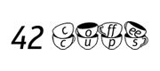

Thursday, May 19, 2016
How to deploy a public github project on getBarista
It's dead simple:
1. Make a fork of a repository on the GitHub
You should get something like this:
2. Open Settings -> Webhooks & services -> Add webhook and enter http://getbarista.com:4000> as Payload URL and application/x-www-form-urlencoded> as content type. Enter Update webhook
3. Now you get go to http://getbarista.com/project and add your project using Add public project from github link. Just like this:
4. Enter your github project url and project name to be used in getBarista:
5. On project dashboard, set Django settings module to fortytwo_test_task.settings, python version (3), migrations mode (1.7+) and save the changes:
Add https://kavahq.com/api/barista/post_deploy/ to Post-deployment URLs on the getbarista project dashboard
7. Clone your project locally.
$ git clone github:yourproject.git
$ cd yourproject
$ virtualenv --no-site-packages .env
$ source .env/bin/activate
$ .env/bin/pip install -r requirements.txt
$ python manage.py migrate --no-input
$ cd yourproject
$ virtualenv --no-site-packages .env
$ source .env/bin/activate
$ .env/bin/pip install -r requirements.txt
$ python manage.py migrate --no-input
8. Change db with random name in settings and make initial commit. Push changes, they will be deployed automatically.
9. Press refresh. This character means some problems in code.
Go link with commit comment
10. There is info about deploy. Go FAILED

and open logs (stdio)
Return to your project, fix math test 2+2 == 4, commit and push changes
All tests ok but your code must be structure follow flake8 and pep8. Fixed all according to logs and get working revision
11. Form here you can execute 1 or all migrations.
Go back:)